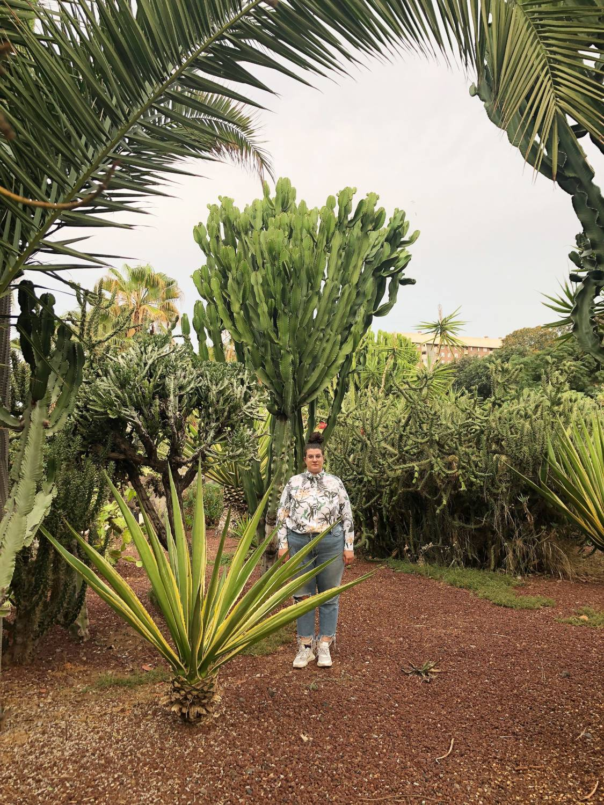

Runs until the pointer first moves over the photo. Comes back once the pointer has been still for the idle time.
Tilts around the fingertip over the photo and over links. Negative = counter-clockwise.